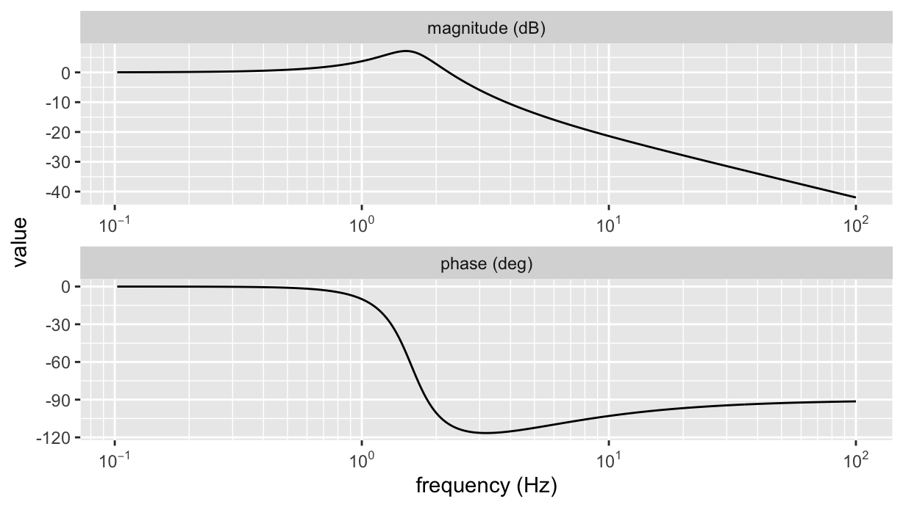

M <- 10
K <- 1000
C <- 50
(H <- tf(c(C/K, 1),c(M/K, C/K, 1)))
y1:
0.05 s^1 + 1
- - - - - - - - - - - - -
0.01 s^2 + 0.05 s + 1
Transfer Function: Continuous time model With the excuse of doing signal analysis in R, this post discusses on how to deal with logarithmic scalses and tick-marks in GGPlot2, and how to generate log-spaced grids to have an equally dense set of points in the resulting plot.
Recently I had to port in R some Matlab code using the tf and bode functions, which are respectively used to calculate the transfer function and create a Bode plot of it.
The R package control luckily provides the analogous functions, although its control::bodeplot function uses the base plot interface. Of course, I wanted to make an analogous plot with GGplot2 tools.
Let us use the example for a lumped parameters model of a vibration isolation system, that is, a 1-DoF mass-spring-damper system. Briefly, its transfer function can be created as:
M <- 10
K <- 1000
C <- 50
(H <- tf(c(C/K, 1),c(M/K, C/K, 1)))
y1:
0.05 s^1 + 1
- - - - - - - - - - - - -
0.01 s^2 + 0.05 s + 1
Transfer Function: Continuous time model Its Bode representation can be obtained by:
bode(H) %>% str()List of 3
$ w : num [1:10000] 0 0.01 0.02 0.03 0.04 ...
$ mag : num [1:10000] 0.00 8.69e-06 3.48e-05 7.82e-05 1.39e-04 ...
$ phase: num [1:10000] 0.00 -2.87e-08 -2.29e-07 -7.74e-07 -1.83e-06 ...That is, a list of three vectors reporting frequency (w), magnitude in dB (mag), and phase in degrees (phase). Why the control developers decided to return a list of equally sized vectors rather a data frame is beyond me, but let’s deal with what we have.
bode(H, w=1:1e4) %>% {
tibble(
`frequency (rad/s)` = .$w,
`magnitude (dB)` = .$mag,
`phase (deg)` = .$phase
)
} %>%
head() %>%
knitr::kable()| frequency (rad/s) | magnitude (dB) | phase (deg) |
|---|---|---|
| 1 | 0.0870762 | -0.0288644 |
| 2 | 0.3509189 | -0.2362699 |
| 3 | 0.7993794 | -0.8294252 |
| 4 | 1.4452744 | -2.0825653 |
| 5 | 2.3044892 | -4.3987054 |
| 6 | 3.3880407 | -8.4155907 |
To make the Bode plot, which reports magnitude vs. frequency on top of phase vs. frequency, we make the tibble tidy and use facet_wrap:
bode(H, w=1:1e4) %>% {
tibble(
`frequency (rad/s)` = .$w,
`magnitude (dB)` = .$mag,
`phase (deg)` = .$phase
)
} %>%
pivot_longer(-`frequency (rad/s)`) %>%
ggplot(aes(x=`frequency (rad/s)`, y=value)) +
geom_line() +
geom_point(alpha = 0.2) +
facet_wrap(~name, nrow=2, scales="free") +
scale_x_log10()
Note the followings:
facet_wrap, we use the option scales="free": this allows to independently rescale the axes of each facet;So, here we want to tackle the problems in 2. and 3..
The scale_x_log10() function allows to specify the breaks and the minor_breaks, which we can exploit to fix the gridlines. How can we get a log-spaced sequence? an elegant solution uses the outer product %o% of two vectors: that of the ticks, and that of the orders of magnitude (ooms):
ticks <- 2:9
ooms <- 10^seq(0, 4)
ticks %o% ooms [,1] [,2] [,3] [,4] [,5]
[1,] 2 20 200 2000 20000
[2,] 3 30 300 3000 30000
[3,] 4 40 400 4000 40000
[4,] 5 50 500 5000 50000
[5,] 6 60 600 6000 60000
[6,] 7 70 700 7000 70000
[7,] 8 80 800 8000 80000
[8,] 9 90 900 9000 90000Looking at the columns , in sequence, we have what we want, so:
(breaks <- as.vector(ticks %o% ooms)) [1] 2 3 4 5 6 7 8 9 20 30 40 50
[13] 60 70 80 90 200 300 400 500 600 700 800 900
[25] 2000 3000 4000 5000 6000 7000 8000 9000 20000 30000 40000 50000
[37] 60000 70000 80000 90000bode(H, w=1:1e4) %>% {
tibble(
`frequency (rad/s)` = .$w,
`magnitude (dB)` = .$mag,
`phase (deg)` = .$phase
)
} %>%
pivot_longer(-`frequency (rad/s)`) %>%
ggplot(aes(x=`frequency (rad/s)`, y=value)) +
geom_line() +
geom_point(alpha = 0.2) +
facet_wrap(~name, nrow=2, scales="free") +
scale_x_log10(minor_breaks=breaks, labels=scales::scientific)Bingo!
Now, we still have too sparse points to the left, and definitely too many points to the right. We can use a similar approach to define the frequency vector.
We use the same outer product trick, multiplying the vector of orders of magnitude by a vector of positions, exponentially spaced within each magnitude:
pts <- 10^seq(0, 1, 0.1) %>% tail(-1)
(freqs <- as.vector(pts %o% ooms)) %>% head(n=20) [1] 1.258925 1.584893 1.995262 2.511886 3.162278 3.981072
[7] 5.011872 6.309573 7.943282 10.000000 12.589254 15.848932
[13] 19.952623 25.118864 31.622777 39.810717 50.118723 63.095734
[19] 79.432823 100.000000Finally:
pts <- 10^seq(0, 1, 0.01) %>% tail(-1)
freqs <- as.vector(pts %o% ooms)
bode(H, w=freqs) %>% {
tibble(
`frequency (rad/s)` = .$w,
`magnitude (dB)` = .$mag,
`phase (deg)` = .$phase
)
} %>%
pivot_longer(-`frequency (rad/s)`) %>%
ggplot(aes(x=`frequency (rad/s)`, y=value)) +
geom_line() +
geom_point(alpha = 0.2) +
facet_wrap(~name, nrow=2, scales="free") +
scale_x_log10(minor_breaks=breaks, labels=scales::scientific)We can then put everything together and make a useful function (note that we are now converting the frequencies to Hz):
ggbodeplot <- function(tf, fmin=1, fmax=1e4, df=0.01) {
ticks <- 2:9
pts <- 10^seq(0, 1, df) %>% tail(-1)
ooms <- 10^(floor(log10(fmin)):ceiling(log10(fmax)-1))
breaks <- as.vector(ticks %o% ooms)
freqs <- as.vector(pts %o% ooms)
bode(tf, freqs*2*pi) %>% {
tibble(f=.$w/(2*pi), `magnitude (dB)`=.$mag, `phase (deg)`=.$phase)} %>%
pivot_longer(-f) %>%
ggplot(aes(x=f, y=value)) +
geom_line() +
scale_x_log10(minor_breaks=breaks, labels=scales::scientific) +
facet_wrap(~name, nrow=2, scales="free") +
labs(x="frequency (Hz)")
}
H %>% ggbodeplot(fmin=0.1, fmax=100)Well, the above is mostly of academic interest, at least for what pertains the logarithmic grid lines: it shows a nice and useful way for creating regularly spaced vectors, which is really useful to evenly distribute abscissa values when the axis scale is not linear. But thanks to the scales package there is a quick way for having any axis, whichever the scale, with a number of minor breaks different to 1 (the defaiult in GGplot). In fact, we can just use the scales::minor_breaks_n() function to generate minor grid lines at will:
ggbodeplot <- function(tf, fmin=1, fmax=1e4, df=0.01) {
pts <- 10^seq(0, 1, df) %>% tail(-1)
ooms <- 10^(floor(log10(fmin)):ceiling(log10(fmax)-1))
freqs <- as.vector(pts %o% ooms)
bode(tf, freqs*2*pi) %>% {
tibble(f=.$w/(2*pi), `magnitude (dB)`=.$mag, `phase (deg)`=.$phase)} %>%
pivot_longer(-f) %>%
ggplot(aes(x=f, y=value)) +
geom_line() +
scale_x_log10(
minor_breaks=scales::minor_breaks_n(10),
labels= ~ latex2exp::TeX(paste0("$10^{", log10(.), "}$"))
) +
facet_wrap(~name, nrow=2, scales="free") +
labs(x="frequency (Hz)")
}
H %>% ggbodeplot(fmin=0.1, fmax=100)
where the trick is to set scale_x_log10(minor_breaks=scales::minor_breaks_n(10)). Note that the argument is the number of intervals rather than the number of grid lines (so, 10 rather than 9). As a final suggestion, try and use the same command with a scale_x_continuous: it works whichever is the axis transformation (including identity). Also, note the labels lambda function used for formatting tick labels.
That’s all, folks!